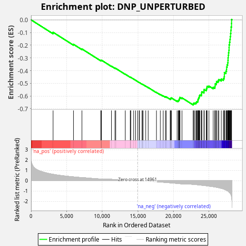
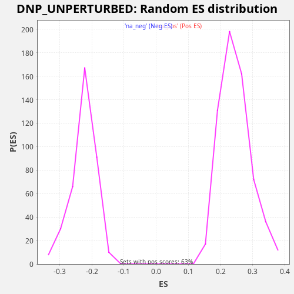

| Dataset | DPN_24h_sinP4_control_3 |
| Phenotype | NoPhenotypeAvailable |
| Upregulated in class | na_neg |
| GeneSet | DNP_UNPERTURBED |
| Enrichment Score (ES) | -0.670328 |
| Normalized Enrichment Score (NES) | -2.9863088 |
| Nominal p-value | 0.0 |
| FDR q-value | 0.0 |
| FWER p-Value | 0.0 |

| SYMBOL | RANK IN GENE LIST | RANK METRIC SCORE | RUNNING ES | CORE ENRICHMENT | |
|---|---|---|---|---|---|
| 1 | ENSG00000145244 | 3100 | 0.610 | -0.0982 | No |
| 2 | ENSG00000184292 | 5967 | 0.363 | -0.1929 | No |
| 3 | ENSG00000038427 | 7152 | 0.293 | -0.2292 | No |
| 4 | ENSG00000075790 | 9815 | 0.149 | -0.3210 | No |
| 5 | ENSG00000136147 | 9823 | 0.149 | -0.3183 | No |
| 6 | ENSG00000118402 | 9890 | 0.145 | -0.3177 | No |
| 7 | ENSG00000188352 | 11294 | 0.130 | -0.3651 | No |
| 8 | ENSG00000102547 | 11794 | 0.103 | -0.3808 | No |
| 9 | ENSG00000183668 | 11892 | 0.096 | -0.3823 | No |
| 10 | ENSG00000092969 | 13225 | 0.089 | -0.4279 | No |
| 11 | ENSG00000116678 | 13947 | 0.049 | -0.4526 | No |
| 12 | ENSG00000117632 | 13967 | 0.048 | -0.4523 | No |
| 13 | ENSG00000111907 | 14010 | 0.045 | -0.4529 | No |
| 14 | ENSG00000154734 | 14417 | 0.026 | -0.4668 | No |
| 15 | ENSG00000122641 | 14680 | 0.011 | -0.4760 | No |
| 16 | ENSG00000152952 | 14968 | -0.001 | -0.4861 | No |
| 17 | ENSG00000113578 | 15193 | -0.015 | -0.4938 | No |
| 18 | ENSG00000109189 | 15212 | -0.016 | -0.4941 | No |
| 19 | ENSG00000122786 | 15604 | -0.037 | -0.5073 | No |
| 20 | ENSG00000139372 | 15611 | -0.037 | -0.5068 | No |
| 21 | ENSG00000035928 | 15736 | -0.044 | -0.5103 | No |
| 22 | ENSG00000185499 | 16098 | -0.061 | -0.5220 | No |
| 23 | ENSG00000112096 | 16451 | -0.080 | -0.5329 | No |
| 24 | ENSG00000133639 | 17611 | -0.123 | -0.5717 | No |
| 25 | ENSG00000149591 | 18160 | -0.154 | -0.5881 | No |
| 26 | ENSG00000142192 | 18559 | -0.163 | -0.5991 | No |
| 27 | ENSG00000106351 | 18867 | -0.180 | -0.6064 | No |
| 28 | ENSG00000119946 | 18991 | -0.187 | -0.6071 | No |
| 29 | ENSG00000114251 | 19541 | -0.218 | -0.6223 | No |
| 30 | ENSG00000107518 | 19603 | -0.221 | -0.6201 | No |
| 31 | ENSG00000069869 | 19623 | -0.222 | -0.6164 | No |
| 32 | ENSG00000233705 | 19707 | -0.228 | -0.6148 | No |
| 33 | ENSG00000226887 | 20514 | -0.276 | -0.6380 | No |
| 34 | ENSG00000168542 | 20677 | -0.287 | -0.6380 | No |
| 35 | ENSG00000100906 | 20721 | -0.291 | -0.6338 | No |
| 36 | ENSG00000205542 | 20786 | -0.295 | -0.6303 | No |
| 37 | ENSG00000186407 | 20806 | -0.296 | -0.6251 | No |
| 38 | ENSG00000213694 | 20845 | -0.298 | -0.6205 | No |
| 39 | ENSG00000005108 | 20882 | -0.300 | -0.6159 | No |
| 40 | ENSG00000170525 | 20911 | -0.302 | -0.6109 | No |
| 41 | ENSG00000011465 | 21196 | -0.323 | -0.6146 | No |
| 42 | ENSG00000164597 | 22765 | -0.368 | -0.6630 | Yes |
| 43 | ENSG00000138685 | 22810 | -0.370 | -0.6573 | Yes |
| 44 | ENSG00000136144 | 22966 | -0.380 | -0.6553 | Yes |
| 45 | ENSG00000149968 | 23143 | -0.389 | -0.6538 | Yes |
| 46 | ENSG00000041982 | 23222 | -0.393 | -0.6488 | Yes |
| 47 | ENSG00000091137 | 23299 | -0.400 | -0.6436 | Yes |
| 48 | ENSG00000115461 | 23421 | -0.408 | -0.6398 | Yes |
| 49 | ENSG00000169429 | 23431 | -0.409 | -0.6320 | Yes |
| 50 | ENSG00000221869 | 23461 | -0.412 | -0.6249 | Yes |
| 51 | ENSG00000105655 | 23505 | -0.416 | -0.6182 | Yes |
| 52 | ENSG00000143799 | 23565 | -0.420 | -0.6120 | Yes |
| 53 | ENSG00000155111 | 23623 | -0.424 | -0.6056 | Yes |
| 54 | ENSG00000137331 | 23630 | -0.424 | -0.5974 | Yes |
| 55 | ENSG00000189221 | 23710 | -0.432 | -0.5917 | Yes |
| 56 | ENSG00000138772 | 23914 | -0.448 | -0.5900 | Yes |
| 57 | ENSG00000122862 | 23944 | -0.450 | -0.5821 | Yes |
| 58 | ENSG00000108691 | 23947 | -0.450 | -0.5733 | Yes |
| 59 | ENSG00000100612 | 23984 | -0.453 | -0.5656 | Yes |
| 60 | ENSG00000196167 | 24275 | -0.474 | -0.5665 | Yes |
| 61 | ENSG00000110723 | 24289 | -0.475 | -0.5576 | Yes |
| 62 | ENSG00000111799 | 24300 | -0.476 | -0.5485 | Yes |
| 63 | ENSG00000241878 | 24601 | -0.500 | -0.5493 | Yes |
| 64 | ENSG00000066468 | 24638 | -0.504 | -0.5406 | Yes |
| 65 | ENSG00000198959 | 24700 | -0.511 | -0.5326 | Yes |
| 66 | ENSG00000136153 | 24718 | -0.513 | -0.5231 | Yes |
| 67 | ENSG00000143127 | 24979 | -0.538 | -0.5217 | Yes |
| 68 | ENSG00000120129 | 25572 | -0.590 | -0.5311 | Yes |
| 69 | ENSG00000107796 | 25805 | -0.618 | -0.5271 | Yes |
| 70 | ENSG00000153827 | 25844 | -0.623 | -0.5161 | Yes |
| 71 | ENSG00000069849 | 25848 | -0.624 | -0.5039 | Yes |
| 72 | ENSG00000120217 | 26021 | -0.645 | -0.4972 | Yes |
| 73 | ENSG00000189060 | 26042 | -0.648 | -0.4851 | Yes |
| 74 | ENSG00000182836 | 26258 | -0.677 | -0.4793 | Yes |
| 75 | ENSG00000101974 | 26370 | -0.696 | -0.4695 | Yes |
| 76 | ENSG00000124177 | 26714 | -0.755 | -0.4667 | Yes |
| 77 | ENSG00000181264 | 27004 | -0.811 | -0.4610 | Yes |
| 78 | ENSG00000173706 | 27120 | -0.840 | -0.4484 | Yes |
| 79 | ENSG00000163631 | 27141 | -0.846 | -0.4324 | Yes |
| 80 | ENSG00000115419 | 27145 | -0.847 | -0.4157 | Yes |
| 81 | ENSG00000087053 | 27355 | -0.913 | -0.4051 | Yes |
| 82 | ENSG00000155330 | 27447 | -0.937 | -0.3897 | Yes |
| 83 | ENSG00000243649 | 27462 | -0.944 | -0.3715 | Yes |
| 84 | ENSG00000148795 | 27534 | -0.969 | -0.3549 | Yes |
| 85 | ENSG00000252666 | 27617 | -1.005 | -0.3379 | Yes |
| 86 | ENSG00000227105 | 27653 | -1.025 | -0.3188 | Yes |
| 87 | ENSG00000123200 | 27666 | -1.029 | -0.2989 | Yes |
| 88 | ENSG00000168386 | 27695 | -1.043 | -0.2792 | Yes |
| 89 | ENSG00000243927 | 27728 | -1.057 | -0.2594 | Yes |
| 90 | ENSG00000072110 | 27776 | -1.087 | -0.2396 | Yes |
| 91 | ENSG00000146376 | 27808 | -1.107 | -0.2188 | Yes |
| 92 | ENSG00000168014 | 27813 | -1.110 | -0.1969 | Yes |
| 93 | ENSG00000092020 | 27871 | -1.154 | -0.1761 | Yes |
| 94 | ENSG00000075539 | 27917 | -1.186 | -0.1542 | Yes |
| 95 | ENSG00000143153 | 27969 | -1.227 | -0.1317 | Yes |
| 96 | ENSG00000196154 | 28015 | -1.280 | -0.1080 | Yes |
| 97 | ENSG00000169213 | 28050 | -1.324 | -0.0830 | Yes |
| 98 | ENSG00000101335 | 28093 | -1.397 | -0.0568 | Yes |
| 99 | ENSG00000111328 | 28148 | -1.537 | -0.0283 | Yes |
| 100 | ENSG00000020577 | 28154 | -1.551 | 0.0022 | Yes |
